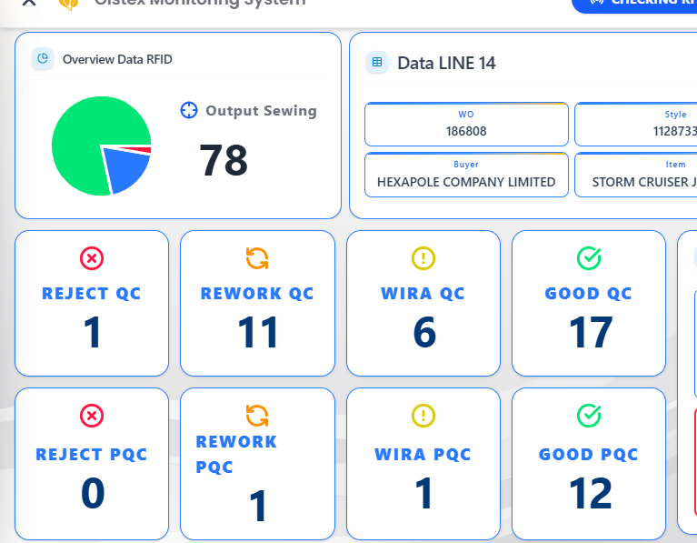
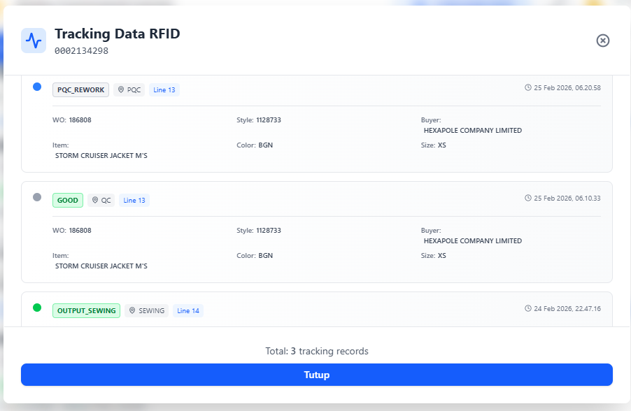
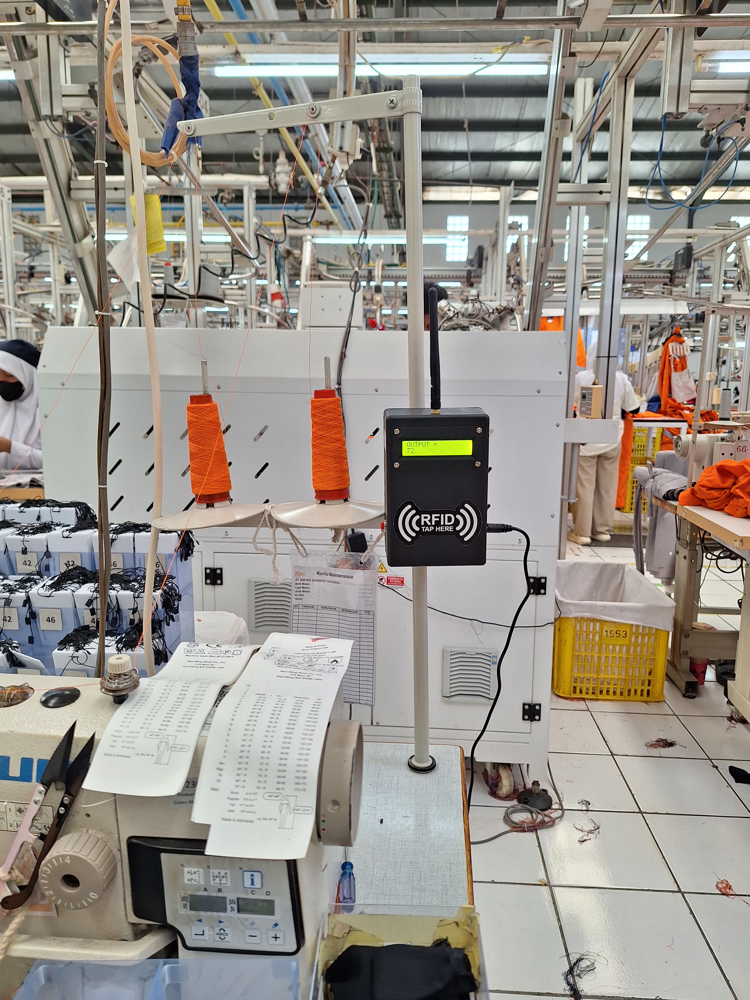

Developed an RFID-based garment tracking system to automatically identify and monitor garment bundles throughout the production process, enabling real-time production traceability.
Developed an RFID-based garment tracking system to automatically identify and monitor garment bundles throughout the production process. The project introduced real-time production traceability by replacing manual recording with automatic RFID identification, providing immediate visibility of garment movement across production lines.
Designed an Industrial IoT solution by integrating RFID readers, embedded controllers, and centralized databases to automatically capture garment movements. Each garment bundle was assigned a unique RFID tag, allowing automatic identification without manual scanning. The system also provided real-time dashboards, production history, and movement analytics.
Successfully implemented real-time garment traceability, significantly reducing manual recording while improving production visibility and data accuracy. The successful deployment demonstrated the value of digital production tracking and became the foundation for broader production digitization initiatives.
This project marked the beginning of the company's digital transformation in production tracking. It provided practical experience in RFID technology, embedded systems, Industrial IoT, and real-time manufacturing monitoring while laying the groundwork for future production management systems.

Real-time IoT dashboard output from the tap output device with RDM6300 and ESP32.

RFID card tracking when and which production stages the garment has passed through.

Example of the tap output device used for sewing output tracking.